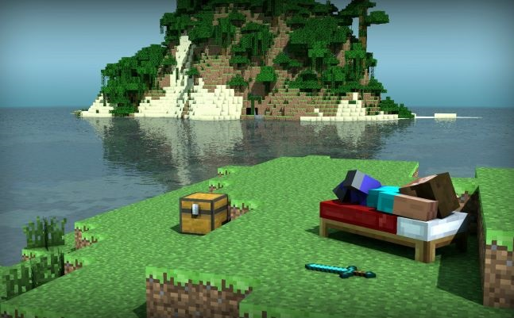

MC Web 整合版
PC浏览器上的网页版MC
免费 无广告 免下载 本地化 在线联机
郑重声明:本网页采用MC.JS.COOL网站页面，请帮忙转告此网站作者！如果侵权可联系我删除！
本网站的整合了网络上的在线MC，所有版权归作者所有！如果你有想让我们发布在网页上的可以联系我们！
联系方式:QQ3344310554 E-mail:cnzz666@163.com

PC浏览器上的网页版MC
免费 无广告 免下载 本地化 在线联机
郑重声明:本网页采用MC.JS.COOL网站页面，请帮忙转告此网站作者！如果侵权可联系我删除！
本网站的整合了网络上的在线MC，所有版权归作者所有！如果你有想让我们发布在网页上的可以联系我们！
联系方式:QQ3344310554 E-mail:cnzz666@163.com

由站长整合了网络上的大部分在线MC
免费 无广告 免下载 本地化 在线联机
本页面整合了开源网页/网页上的大部分在线MC！
所以部分页面可能造成侵权，侵权请联系我们删除！
网页版MC仅供娱乐，请支持正版Minecraft！
本站由于是github.io域名，访问慢请挂梯子！
仅支持电脑版Chrome浏览器运行！移动版用户请滑到最下面使用WebMC，其他浏览器请确保浏览器内核是较新版Chrome内核！
EaglercraftX-MCJE1.8.8 最新版
完整版Minecraft Java Edition 1.8.8
全新渲染引擎，支持光影、光线追踪
预装一个网页版MC专用高性能PBR光影
完整的中文支持
支持单人游戏
启动游戏-官方原版 启动游戏-MC.JS汉化版完整版Minecraft Java Edition 1.5.2
支持单人游戏
完整的中文支持
启动游戏-官方原版 启动游戏-IMC.RE汉化版完整版Minecraft Java Edition 1.3
访问快速，不怎么卡顿
支持单人游戏
只支持英文
启动游戏-官方原版基于Java写的非常简易的远古版MC
只支持单人游戏创造模式
完整的中文支持
流畅不卡顿 老年机都流畅
不能多人联机
启动游戏-官方原版 启动游戏-站长汉化版基于Java写的非常简易的远古版MC
只支持单人游戏创造模式
只支持英文
不能多人联机
启动游戏-官方原版基于Java写的非常简易的远古版MC
只支持单人游戏创造模式
完整的中文支持
不能多人联机
启动游戏-官方原版基于Nodejs重写的非常简易的远古版MC
只支持单人游戏创造模式
同时支持手机端触屏操作和电脑端键鼠操作
只支持英文
不能多人联机
启动游戏-官方原版